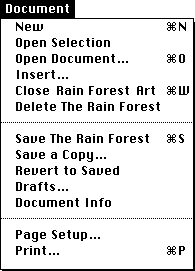
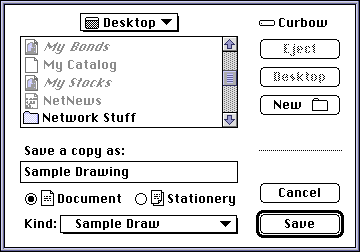
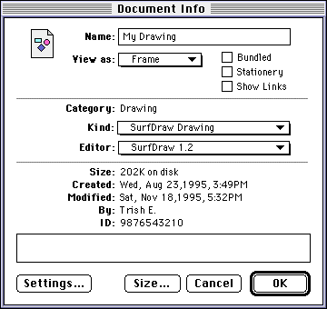

The Document Shell
The document shell is the OpenDoc object responsible for handling document-
wide and draft-wide operations. It is the closest OpenDoc runtime equivalent to a conventional application, although the same document shell handles all kinds of OpenDoc parts and documents. One of its main responsibilities is to accept events from the operating system and pass them on to OpenDoc for dispatching. Another is to handle certain menu items.This section summarizes the runtime operations and responsibilities of the document shell and its relationship to part editors. It also describes how the document shell handles commands from the Document menu.
The discussion in this section is largely for informational purposes; your part editor never has to call the document shell.
Document Shell Operations
In OpenDoc, the document--not any application--is the owner of the process in which the document is opened. Under OpenDoc on the Mac OS platform, the document manages standard tasks like handling the event loop, managing files, and interacting with system menus, dialog boxes, and so on. This behavior is provided by a shared library called the OpenDoc document shell. Individual part editors implicitly use this shared code in the document. For this reason, part editors can be significantly smaller than conventional applications. However, part editors must cooperate with each other in ways that conventional applications normally do not.The document shell represents the process in which the parts of a single OpenDoc document execute. It is instantiated when an OpenDoc document is launched, and it is released when the document is closed. The document shell's basic responsibilities are the following:
- It creates and initializes the session object.
- It opens a document (as instructed by the user) from storage.
- It accepts user and semantic events and passes them to the OpenDoc dispatcher.
- It handles most items on the Document menu.
Opening a Document
When the user opens a document, OpenDoc generates a new process that instantiates the document shell. The document shell instantiates the session object, which in turn instantiates the globally available OpenDoc objects, such as the arbitrator and the window-state object. The document shell then opens the document file and reads the document object and its most recent draft object into memory. The document shell then reads in the draft's window-state object to reconstruct the document's windows. For each window, the window state reads in the root frame.The root frame for the window reads in the root part. The root part creates and registers the window, determines which of its embedded frames are visible, reads them in, and constructs facets for them by calling the root facet's
CreateEmbeddedFacetmethod. The embedded frames read their own parts. Those parts in turn read in their embedded frames and create facets for them, and so on, until all visible frames, parts, and facets have been read from storage.Once all of the necessary objects are read in, OpenDoc asks each facet to draw itself; the part editor of the facet's frame draws the part content that is visible in the facet.
Saving and Reverting a Document
When the user saves a document, the draft object asks each part in the document to write itself to the document file. Each part writes its data and references to its embedded frames. The document shell then writes the window state to the document file.When a document is saved, its data is saved in the context of the current draft. (Each draft of a document includes its own window state, allowing the user to open earlier drafts for viewing at any time.)
If the user specifies that a document is to be saved as stationery, the document shell sets a flag in the document file to notify the operating system that a document is stationery instead of an ordinary OpenDoc document.
Reverting a draft means throwing away any changes that have been made since the last save. The document shell releases the existing window state and restores the window state from the previously saved draft. As a result of reverting a draft, the active part and thus the selection and user-interface elements may change.
Closing a Document
The document shell closes a document when its last document window closes. As a result of this closing, some other OpenDoc document window may become active, with its own active frame and selection.If changes are to be saved when the document closes, the document shell follows the procedures described in the previous section. If the user closes a document without saving changes to the current draft, the document shell releases the window state, leaving the document in its state as of the last save.
Handling User Events
The document shell receives all user events directly and ensures that events intended for individual parts get to the proper part editor.The document shell passes all events to the dispatcher for dispatching to the appropriate part, without first classifying them. The dispatcher rejects events it can't identify, returning them to the shell to handle.
To dispatch an event, the dispatcher locates the appropriate dispatch module for the event and asks it to dispatch the event. The dispatch module actually distributes the event to the appropriate part or document, in cooperation with the window state and the arbitrator, using the facet hierarchy. (See Chapter 5, "User Events,"for more information.)
Part of the document shell's event-handling job is to provide information to part editors about mouse tracking. The document shell also supplies the basic menu bar used by OpenDoc documents and parts.
The document shell can handle standard Mac OS window events, such as a click in the close box, although the dispatcher gives the root part of the window a chance to handle such events first. See "Handling Window Events" for more information.
Menu events go first to the document shell; the shell handles most Document menu commands and passes others (see "The Document Menu"
Handling Semantic Events
Semantic events sent to a part in a document are received first by the document shell and then passed to the dispatcher to be distributed in the same manner as user events. See "Writing Semantic-Event Handlers" for more information.The document shell has its own semantic interface, through which it handles the required set of Apple events. See the note "Document shell semantic interface"
The Document Shell and the Document Menu
Figure 11-12 shows the standard OpenDoc Document menu on the Mac OS platform. The OpenDoc document shell creates the standard Document menu and handles most items in it. Items not handled by the document shell are handled by the root part or the active part, as described in the section "The Document Menu" for a discussion of the user-interface considerations related to the Document menu and its items.Figure 11-12 The Document menu

Here is how the document shell handles each item in the menu:Figure 11-13 Save a Copy dialog box
- New. The document shell creates a new, blank document whose root part is of the same part kind as the root part of the active window (which may be either a document window or a part window). The shell then opens the document in a separate document window. In rare cases, user preferences may cause the new document to be bound to a different editor than the editor of the root part of the active window.
When a document containing your part opens, your part receives several method calls, as described in "Opening a Document".
- Open Selection. (Handled by the active part; see "The Document Menu".)
- Open Document. The document shell displays a file-navigation dialog box, through which the user selects a document to open. The document opens in its own document window.
- Insert. (Handled by the active part; see "The Document Menu".)
- Close Window. The document shell closes the frontmost window. When a document containing your part closes because its last open document window closes, your part receives several method calls, as described in "Closing Your Part"
- Delete Document. The document shell saves the currently open document and then moves it to the Trash.
- Save Document. The document shell saves the current document (the document containing the currently active part). If this is the first save of the document, the document shell displays a standard-file dialog box to allow the user to choose a document name and location.
- Save a Copy. The document shell saves a copy of the current draft into a new file. The document shell displays a file-navigation dialog box (Figure 11-13) to allow the user to specify the name and choose a location. The current document remains open.

The Save a Copy dialog box also allows the user to specify a part kind for the root part. If your part is saved through this command, your part editor receives a call to itsExternalizeKindsmethod; see "The ExternalizeKinds Method" for an explanation.Figure 11-14 Document Info dialog box
- Revert to Saved. The document shell reopens the last saved version of the current document, replacing the presently open version of it.
- Drafts. The document shell displays the draft history of the current document in a movable modal dialog box. The user can use the dialog box to create new drafts of the document and select previous drafts for editing. An example of the Drafts dialog box is shown in Figure 1-16
- Document Info. The document shell brings up the Document Info dialog box, shown in Figure 11-14.

The user can then perform several actions, including changing the view type, part kind, and editor for the root part as well as the heap size for the document.The dialog box also contains these three checkboxes:
- Bundled. The user checks this box to make the root part bundled. The document shell sets the bundled state of the root frame to true.
- Stationery. The user checks this box to make this document a stationery pad.
- Show Links. When the user checks this box, all part editors should display all link borders in all windows displaying the document. Because the user can check this box at any time, your part editor should check whether it needs to display link borders each time it draws its contents. See "Link Borders" for more information.
The user can also access the root part editor's Settings dialog box through the Settings button in the Document Info dialog box. For more information on settings, see "The Settings Extension"
- Page Setup. (Handled by the root part; see "The Document Menu".)
- Print. (Handled by the root part; see "The Document Menu"